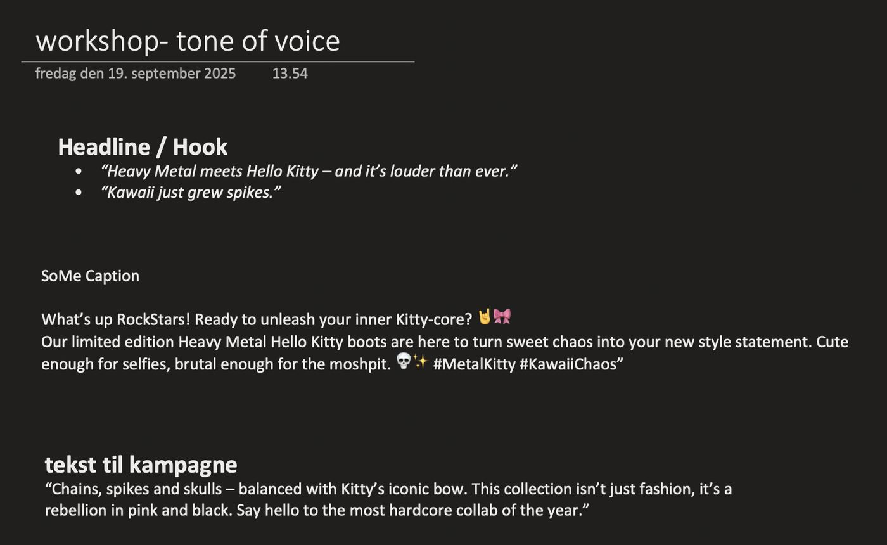
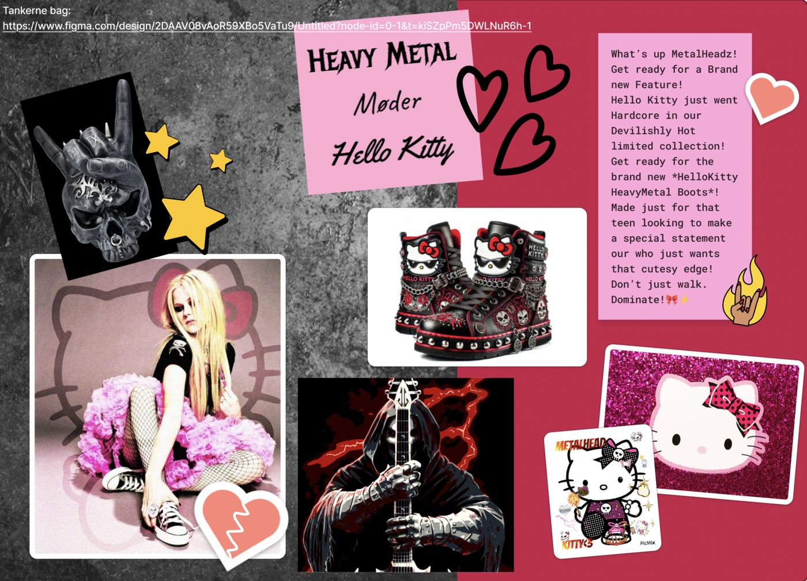

1. Semester
Tone Of Voice - WorkShop
Tone of Voice – Workshop
Formålet med denne workshop var at arbejde med udviklingen af en tydelig og konsekvent tone of voice til en fiktiv kampagne. Fokus var på samspillet mellem sprog, stil, æstetik, målgruppeforståelse og produktidentitet, så kommunikationen fremstår sammenhængende både skriftligt, mundtligt og visuelt. Workshoppen gav mulighed for at eksperimentere kreativt med ordvalg, attitude og brandkarakter og tydeliggjorde, hvordan tekst og visuel stil understøtter hinanden.
Vi tog udgangspunkt i et humoristisk og kontrastfyldt koncept: “Heavy Metal møder Hello Kitty”. For at ramme forskellige målgrupper arbejdede vi med personaer, blandt andet en 16-årig pige, der bruger edgy og kawaii-elementer til at udtrykke sin identitet, samt en 30-årig mand, der normalt lytter til metal, men gerne vil vise en mere legende side. Dette skabte et spændende arbejdsrum, hvor tone of voice skulle balancere mellem det rå og det søde, det selvsikre og det humoristiske. Samtidig definerede vi brandets karaktertræk som playful, intens, legende, cute og metal attitude, samt værdier som råt men uskyldigt og mørkt men feminint.
Herefter arbejdede vi med headlines og hooks, der tydeligt udnyttede kontrasterne mellem kawaii og metal. Eksempler som “Heavy Metal meets Hello Kitty – and it’s louder than ever” og “Kawaii just grew spikes” blev brugt som afsæt for den videre tekstudvikling. På den baggrund skrev vi korte SoMe-tekster, der skulle være catchy, lette at afkode og understøtte kampagnens visuelle univers. Teksterne gjorde bevidst brug af emojis, punchlines, overdreven attitude og kontraster mellem det søde og det hardcore.
Som afslutning udarbejdede vi tre forskellige versioner af kampagneteksten med hver sin tone: en energisk og legende version, en kort og punchy version med mere metal-attitude og en version med et tydeligere kawaii-twist. Øvelsen gjorde det tydeligt, hvordan man kan skifte tone uden at miste brandets overordnede identitet. Workshoppen blev desuden understøttet af moodboards og visuelle elementer som boots, kawaii-ikoner, hjerter, skulls og grafiske collager, hvilket gjorde det nemmere at holde den sproglige og visuelle stil konsistent.
Workshoppen gav mig en klar forståelse for, hvor stor betydning tone of voice har for en kampagnes udtryk og modtagelse. Selvom produktet var det samme, ændrede små sproglige justeringer hele stemningen og målgruppens opfattelse. Jeg blev særligt opmærksom på, hvor effektiv brugen af kontraster kan være til at skabe en stærk identitet, og hvor vigtigt det er, at tekstens attitude matcher det visuelle udtryk. Samtidig lærte jeg, hvordan detaljer som emojis, ordvalg og sproglig rytme kan forstærke en brandpersonlighed. Hvis jeg skulle arbejde videre med konceptet, ville jeg undersøge, hvordan tone of voice kan tilpasses forskellige platforme som webshop, TikTok, plakat og nyhedsbrev.



